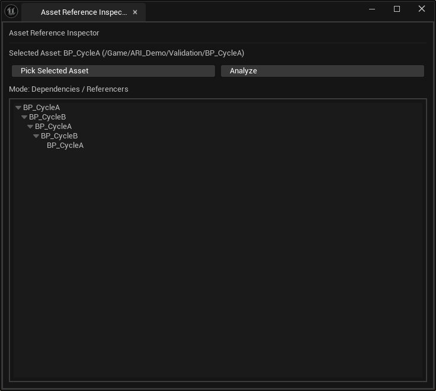
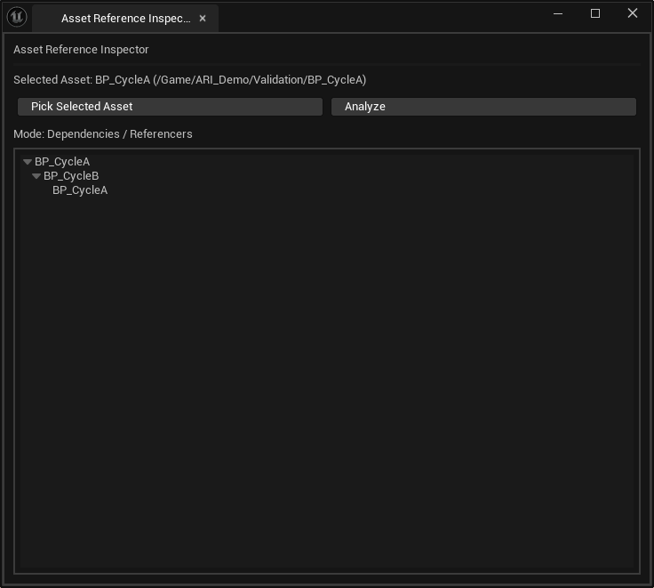

확인한 동작
| 조건 | 실제 표시 |
|---|---|
| 순환 방어 비활성화 | A → B → A → B → A · Max Depth까지 반복 |
| 순환 방어 활성화 | A → B → A · 마지막 A 아래로 확장하지 않음 |
아래 화면은 개발 당시 BP_CycleA와 BP_CycleB로 확인한 자료입니다. 10월에 별도 Data Asset으로 수행한 공유·순환 추가 QA와 구분합니다.
개발 당시 전후 화면
방어 전 · 반복 전개


방어 후 · 재방문 노드에서 중단


근거와 검증 범위
개발 당시 검증 로그의 “AssetReferenceInspector Max Depth 재귀 Tree 생성” 항목에 비활성화·활성화 결과와 두 화면이 함께 기록되어 있습니다.
이 단계에서 Max Depth 입력 UI와 정식 Engine / Plugin Content 옵션은 미검증으로 기록되어 있습니다. 현재 포트폴리오 전체의 검증 범위는 아래 문서에서 별도로 확인합니다.
공유·순환 전체 검증 범위